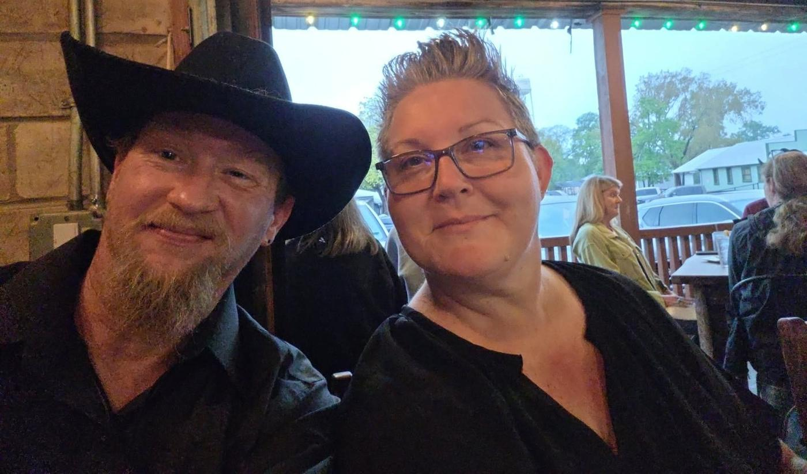
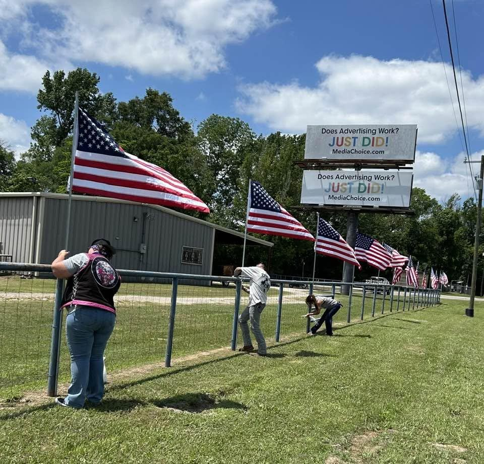
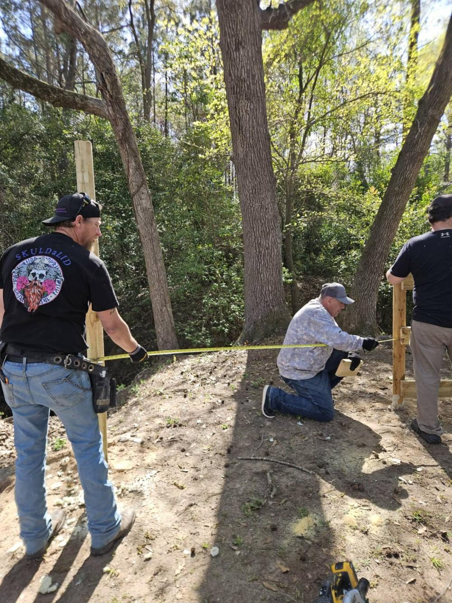
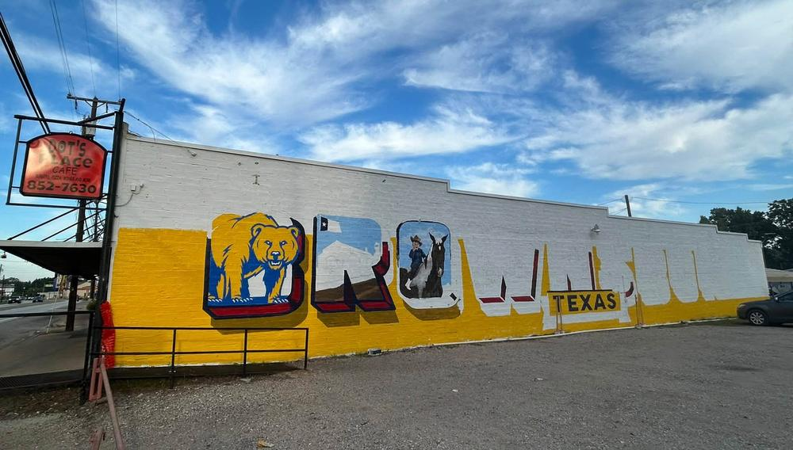
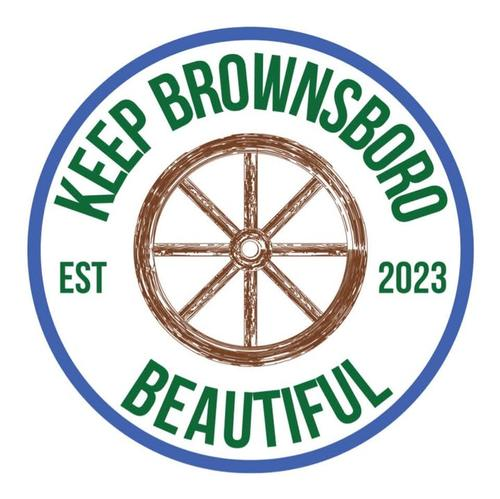
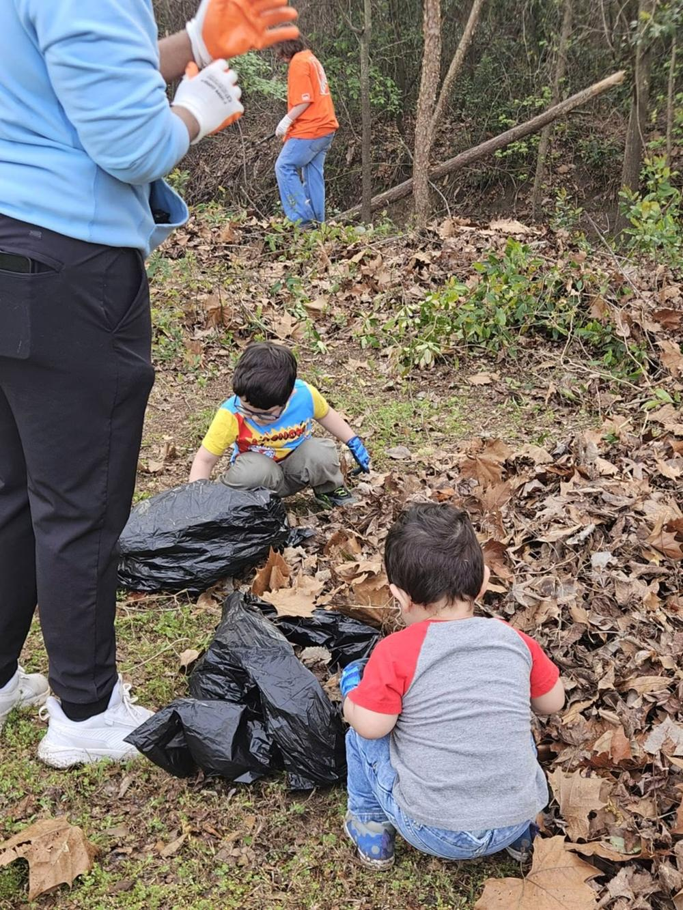

Neighbor Story · Brownsboro
Stepping Out to Serve: Chris Owens and the Work of Keeping Brownsboro Beautiful
From a painter's van to the president's chair, Chris Owens has found his calling in rolling up his sleeves for the little town he loves.

Chris Owens was up late Friday night, in a clown costume, helping Keep Brownsboro Beautiful with its part in Boro After Dark.
For Chris, it was about being there. When Brownsboro throws a party, he wants to be right in the middle of it, supporting his community, costume and all. By Saturday morning he was sitting down to talk about the town, with a volunteer shift at Pumpkin Park still ahead of him that afternoon.
That's pretty much how Chris spends his weekends now. As president of Keep Brownsboro Beautiful (KBB), he is hard to miss at the town's cleanups, contests and celebrations, which is funny, because he'll tell you this kind of life didn't come naturally to him.
A city boy who craved a small town
Chris was born in Tyler and lived in Missouri's Ozarks and in the Norman, Oklahoma, area before coming back to East Texas. He calls himself "a bar cowboy," because dressing like one is about as far as it goes. The felt hat mostly stays in the closet.
Painting runs in the family. His father started the family business in 1995. Chris took it over and has been painting for 30 years now, and he has passed the trade on to his son, Michael. Today he runs Owens Painting & Remodeling.
He had owned a home in Parkside Shores years ago and already knew a few Brownsboro faces. "I've always been a city boy myself," he said, but Brownsboro won him over. "I love the little town. You know, Brownsboro is a small little town."
Starting over
The Owens family came home carrying a heavy loss. About four years ago, Chris and his wife, Dee, lost their 16-year-old daughter.
"That forced us to say, hey, we're going to have to revamp our life and do something different," Chris said.
They moved to Texas and started over from scratch, at first living in a camper on their land and hauling in water. "This is back to some roots," he remembered thinking. Through that season, he said, a church family stood with them. "It is about standing beside each other."
They visited several churches before finding their place at Union Hill Baptist Church. "Union Hill just kind of stuck with us," he said. "That's right where we felt like we belonged." Since then, "things have been getting better." The family now lives in Sunrise Shores on Lake Palestine, and their kids attend Brownsboro schools.
"Serve one another"
About two years ago, Morgan Smith, one of the first neighbors the family met when they came back, told Chris about an opening on the KBB board. He wasn't sure he was the man for it.
"At first I was like, man, I've never done anything like this," he said. "I wouldn't say I've been a selfish person my whole life, but it has been about me, my priorities, my family."
He believes God was nudging him. "Jesus is a perfect example. He washed his brother's feet," Chris said. "So in a sense, we are supposed to be servants of one another... I was like, okay, he's speaking to me: serve one another."
He reasoned that he already led a business and a family, so he could learn to lead this too. Morgan pushed him to go for it, and he became president. Chris, who began a second two-year term this September, says his feelings about the job have gone "from nervous to excitement."
He opens KBB meetings with prayer now. "I want to put God ahead of our organization," he said.
Glorified janitors, and proud of it

The group, formally Keep Brownsboro Beautiful 2023, was formed on Sept. 24, 2023, became a Keep Texas Beautiful affiliate in January 2024, and is a 501(c)(3) nonprofit, according to the City of Brownsboro. This year KBB became a Gold Star Affiliate of Keep Texas Beautiful, the state group's highest honor for local affiliates. On its Facebook page, KBB says it got there "because of our work and especially our volunteers." Its mission is "to inspire, empower, and educate people to take everyday action to improve and beautify their community environment."
Chris puts it more simply: "We're literally glorified janitors slash decorators." He is perfectly content with that. He loves this town, wants it to look its best, and is fully involved in making that happen alongside many great men and women.
The all-volunteer board holds citywide cleanups throughout the year, keeps up the decorating contests for fall, Halloween, the Fourth of July and Christmas, and helps out with Pioneer Day, Boro After Dark, National Night Out, the Christmas tree lighting at City Hall, and ribbon cuttings with the Brownsboro Chamber of Commerce and the Brownsboro Area EDC. When it's time to judge the decorated houses, Chris usually makes the rounds on his motorcycle. "It's kind of weird," he laughed. "What's this guy on a motorcycle doing in front of my house?"

In the city park, volunteers have cleaned up the playground equipment, cleared the brush so neighbors can walk down to the creek again, and put up the new fence. Chris's business donated the labor for the fence and will donate the staining too. KBB's Facebook page counted 25 volunteers at its March 14 cleanup, the day the new park fence went up. Home Depot has sent crews twice. Chris gives much of the credit to treasurer Denise Brumels, who serves alongside vice president Monte Bragg and secretary Dee Owens. Yes, that Dee: Chris's wife, so the president never has to look far for a good teammate. Denise seeks out grants, donations and helping hands.
"Everything that we do is about the community," he said. "How can it affect the community? Positive."
"Greetings from Brownsboro"

The project Chris is most excited about is the big mural now going up on the side of a downtown building. KBB has worked on it for about two years. Chris prepped the wall himself with brick and mortar repairs and five coats of paint. "I make the canvas," he said. The artist gets the fun part.
The idea Chris carried from the start was "Greetings from Brownsboro, Texas," a nod to Brownsboro being the oldest town in Henderson County. A mural committee that included Brooke Foster, president of the Brownsboro Area Economic Development Corporation, along with Denise and interested citizens, worked out what each letter would hold. They wanted past, present and future, and they wanted the school in it. The "B," naturally, features the Brownsboro Bear. The EDC came alongside KBB to split the cost, and East Texas muralist Kerian Massey of Kerian's Art took the brush.
"God has a way to make his plans come to fruition," Chris said.
KBB will own the artwork, so mugs, badges and tote bags with the design can help fund future projects.
Ways to get involved


- Sat., Nov. 7: Bi-Annual KBB Clean-Up, starting at 9 a.m. at Brownsboro City Hall, 11351 Willow St.
- Mon., Nov. 9: KBB public meeting, 6 p.m., at Brownsboro City Hall.
- Sat., Nov. 14: Mural reveal, with food and a merchandise table planned.
- Sat., Nov. 21: First annual free community Thanksgiving dinner, 2 to 4 p.m., at Monte's Place on Bear Circle, with help from Faith Baptist, Rock Hill and Union Hill churches. Rock Hill is making the dressing, Faith Baptist the desserts and Union Hill the sides, and KBB is supplying the meats through grants and donations. Servers are welcome, and organizers hope to deliver plates to neighbors who can't get out.
- December: Christmas in Town Hall, with Santa, the Grinch and the tree lighting at City Hall.
Chris hopes to see a concrete walking path in the city park one day. More than anything, though, he wants more neighbors to join in. The board has just four officers.
"Most people in this world want to use their mouth, but not their hands and feet," he said. "Let more than your mouth do your work. Put your body to work too."
He doesn't do it for credit. "I want people to watch me and go, 'Oh, look what he's doing,'" he said. "I don't get no credit for that, but God watches."
"At the end of the day, it's about how we can serve one another, how we can better our community," Chris said. "Keep Brownsboro Beautiful means keeping Brownsboro beautiful."
Chris lets his actions speak for themselves, and he is calling on others who love this community to stand up and make a difference for the betterment of our beloved Brownsboro.
Find Keep Brownsboro Beautiful on Facebook or email keepbrownsborobeautiful2023@gmail.com.
Did You Know?
- National roots: Keep America Beautiful was founded in 1953.¹
- Texas roots: Keep Texas Beautiful started in 1967 as the Beautify Texas Council, when Texas was getting ready for HemisFair '68 in San Antonio. It took the name Keep Texas Beautiful in 1985 and became Keep America Beautiful's state affiliate.²
- State partners: KTB has worked with the Texas Department of Transportation since the late 1960s. Since 1985 it has had a yearly TxDOT contract supporting programs like the Don't mess with Texas® Trash-Off.³ Texas law (Transportation Code §504.602, 2003) also created a "Keep Texas Beautiful" license plate. The money from it pays for state litter-prevention and beautification programs.⁴
- Local affiliates: The "Keep [City] Beautiful" affiliate program began in 1991. Each town can have only one affiliate, and there are now more than 200 of them.¹ ⁵ Brownsboro's became one in January 2024⁶ and was named a Gold Star Affiliate in 2026.⁹
- Gold Star: This is KTB's highest honor for an affiliate. Gold Star groups go beyond the basic requirements. They show strong leadership and community involvement, state their mission and goals, report on economic development and diversity work, enter statewide awards like the Beautify Texas Awards or the Governor's Community Achievement Awards, and send a letter of support from their community.⁷ ⁸ KTB honored its 2026 Gold Star Affiliates at its May 12–14 virtual conference.⁸
Sources: ¹ KTB Affiliate Handbook (pub-laporte.escribemeetings.com/filestream.ashx?DocumentId=4355); ² ktb.org/about-us; ³ ktb.org/ktb-blog/txdot-highway-cleanups-a-how-to-guide; ⁴ Tex. Transp. Code §504.602; ⁵ ktb.org/form-an-affiliate; ⁶ brownsborotx.gov/keep-brownsboro-beautiful; ⁷ Levelland & Hockley County News-Press, Apr. 5, 2025; ⁸ Texas Border Business, "Keep McAllen Beautiful Recognized as Gold Star Affiliate," 2026; ⁹ Keep Brownsboro Beautiful Facebook page (facebook.com/profile.php?id=61551677767331).